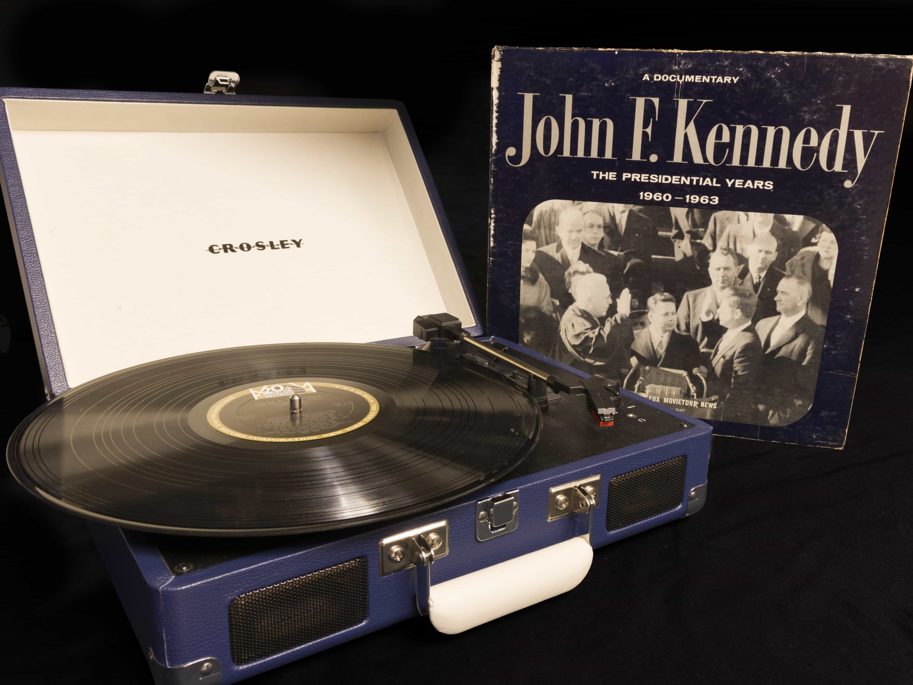

Favorites
The Cars - The Elektra Years
This box set consists of the six original albums by The Cars. I feel like if I could go back and see any band live, it would be The Cars (or maybe Queen, but The Cars is definitely up there).
Hayley Kiyoko - Expectations
If you look closely, this one’s signed!
Also with a beautiful pearl-colored vinyl
Coldplay - A Rush of Blood to the Head
I did like a lot of these songs when I was little, but it might be the fact that this was also the record on the player when I had my first kiss that puts it on the favorites list 😳.
Def Leppard - The Story So Far
This “best of” album came out a few months after I went to a Def Leppard/Journey concert with my mom in 2018. Plus, it includes a cover of Depeche Mode’s Personal Jesus on its own 7” single.
Melanie - Brand New Key
There’s just something so fun about this song!
Various Artists - Golden Goodies
An album I “stole” from my grandparents. It’s a collection of hit songs from the late 1950s. Notable songs include The Platters’ “Smoke Gets In Your Eyes” and Dinah Washington’s “What A Diff'rence A Day Makes”.
John F. Kennedy - John F. Kennedy: The Presidential Years
Another album I “stole” from my grandparents. I’ve only listened to it once, but it’s one of those records you have just to say you do.
